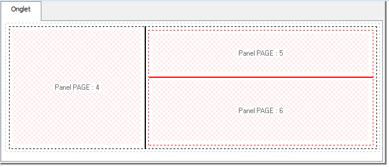
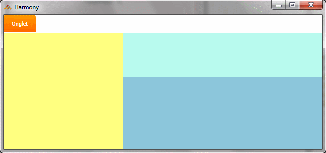

A l'exécution, une grille n'est pas visualisée à l'écran mais la position et la taille de ses cellules dans Xwin sont significatives (contrairement aux cellules des grilles Html de Xwin Web qui s'adaptent automatiquement au contenu). Ainsi :
Une page panel est automatiquement positionnée dans la page parent à l’endroit occupé par la cellule de grille correspondante (les offsets paramétrés pour la page panel dans Xwin sont ignorés).
Si la taille paramétrée pour une page panel est inférieure à la taille de la cellule qui la contient, la place restante restera inoccupée.
Si, au contraire, la taille paramétrée pour de la page panel est supérieure à la taille de la cellule, des ascenseurs horizontal et/ou vertical apparaîtront pour la cellule à l’exécution.
Remarque importante :
Dans la quasi totalité des cas, on aura intérêt à ajuster exactement la taille des cellules à leur contenu.
Cet ajustement n'est pas implicite mais il peut être obtenu en appelant le choix "Ajuster la taille des cellules de grille" du menu Edition de Xwin (raccourci clavier Maj+Ctrl+F3) :
Cette fonction s'applique uniquement à la page courante. Elle agence toutes les grilles de la page pour qu’elles s’ajustent à leur contenu. Plus précisément :
Elle recalcule la taille des cellules et des grilles en se basant sur les tailles spécifiées dans les propriétés des pages panels référencées.
Si la page comporte un onglet, elle recalcule la taille de l'onglet. Le cas échéant, elle recadre aussi l'onglet pour qu'il occupe toute la surface de la page.
Elle recalcule enfin la taille de la page courante pour qu'elle contienne exactement la grille principale (*).
Elle doit être appelée lorsque tous les objets panels ont été placés dans la page (et que toutes les cellules des grilles ont été garnies).
En cas d'imbrication de pages panels, attention à exécuter successivement cette fonction sur TOUTES les pages parentes concernées, en commençant par celle de plus bas niveau et en remontant de proche en proche jusqu'à la page parente principale.
Exemple :
La page parente A contient une grille à deux cellules contenant chacune un objet Panel référençant respectivement les pages A1 et A2. La page panel A1 contient elle-même une grille à trois cellules contenant les pages panels A11, A12 et A13. Appelez d'abord la fonction d'ajustement sur la page panel A1, PUIS rappelez la fonction sur la page parente principale A.
(*) La taille actuelle de la page peut s'avérer insuffisante ou au contraire trop importante. Dans ce cas, Xwin propose de changer la taille dans les propriétés de la page. Vous pouvez refuser ce changement (par exemple, parce que ce n’est pas la taille de la page parente qui doit être modifiée mais la taille d’une de ses pages panels).
Mais attention si vous refusez : Xwin ajuste en permanence et automatiquement la grille principale pour qu’elle recouvre l’intégralité de la page. Sans mise à jour de sa taille, le nouvel agencement des grilles sera immédiatement perdu et ne correspondra plus aux pages panels. N’oubliez donc pas de ré-exécuter la fonction après avoir effectué les adaptations désirées.
De manière plus générale, n’oubliez pas d’exécuter la fonction après tout changement de taille d’une des pages panels.
Remarque complémentaire concernant la disposition des onglets, des grilles et des panels pages dans Xwin :
Dans Xwin, les onglets, les grilles et les objets panels pages sont visualisés avec des marges pour faciliter la sélection ou le déplacement des objets. Il en résulte un dessin apparent qui n’est pas intégralement Wysywig. De manière générale, les cellules de grille "centrales" apparaissent avec leur taille exacte. Les grilles et les cellules situées en bord de page, d’onglet ou d’une cellule parente doivent être étendues jusqu’à la clip grille ou jusqu’au début de la cellule parente pour obtenir leur taille réelle.
Exemple :

Page comportant un onglet et une grille principale "en Colonne" de 2 cellules.
La 1ère cellule contient un panel référençant la page 4, la 2ème une sous-grille "en Ligne" de 2 cellules.
Les cellules de cette sous-grille contiennent chacune un panel référençant respectivement les pages 5 et 6.
A l'exécution, les marges n'existent pas (elles sont implicitement ajoutées à la surface "apparente" des objets dans Xwin pour obtenir leur surface réelle).
Exemple précédent à l'exécution :

La page panel 4 débute tout à gauche de la page et s'étend du bas de l'en-tête de l'onglet jusque tout en bas de la page.
La page panel 5 se termine tout à droite de la page et débute dès le bas de l'en-tête de l'onglet.
La page panel 6 se termine tout à droite de la page et descend jusque tout en bas de la page.